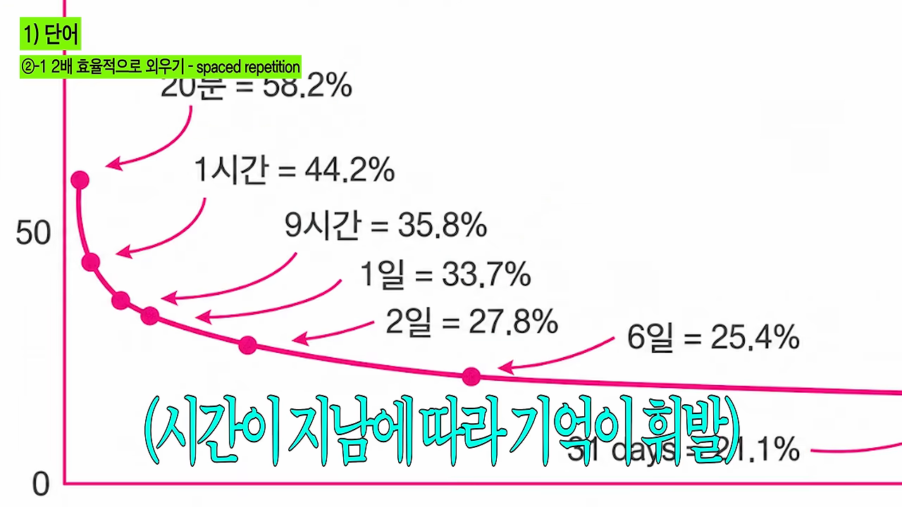
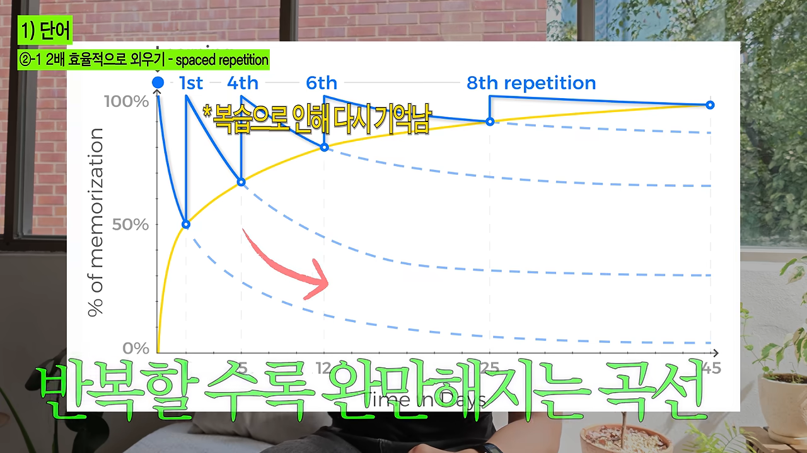
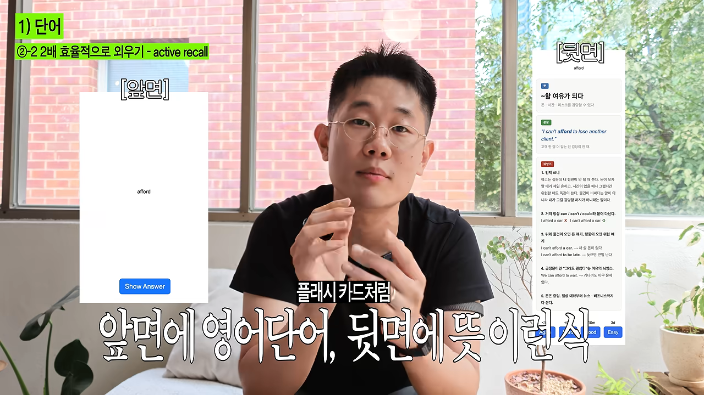
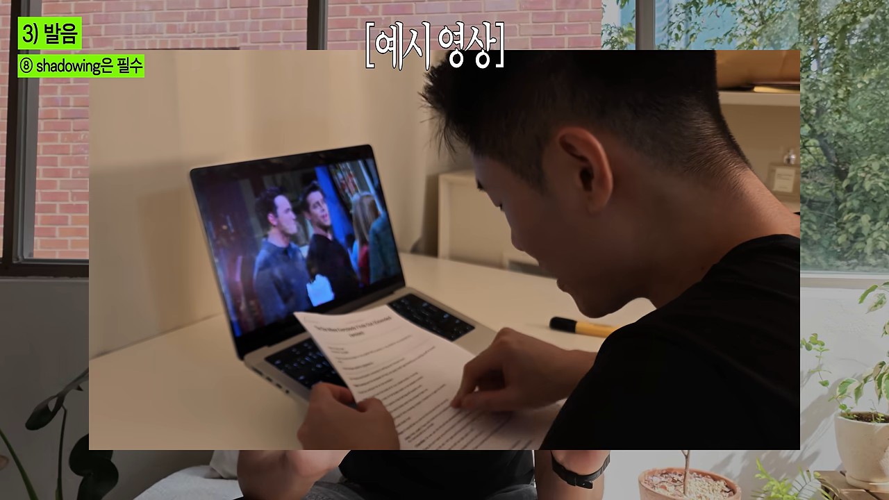
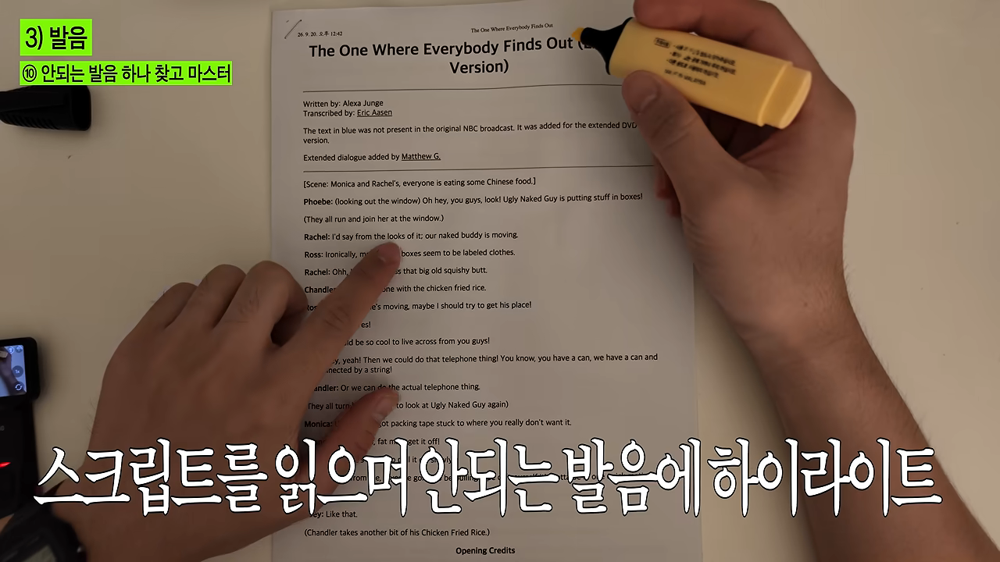
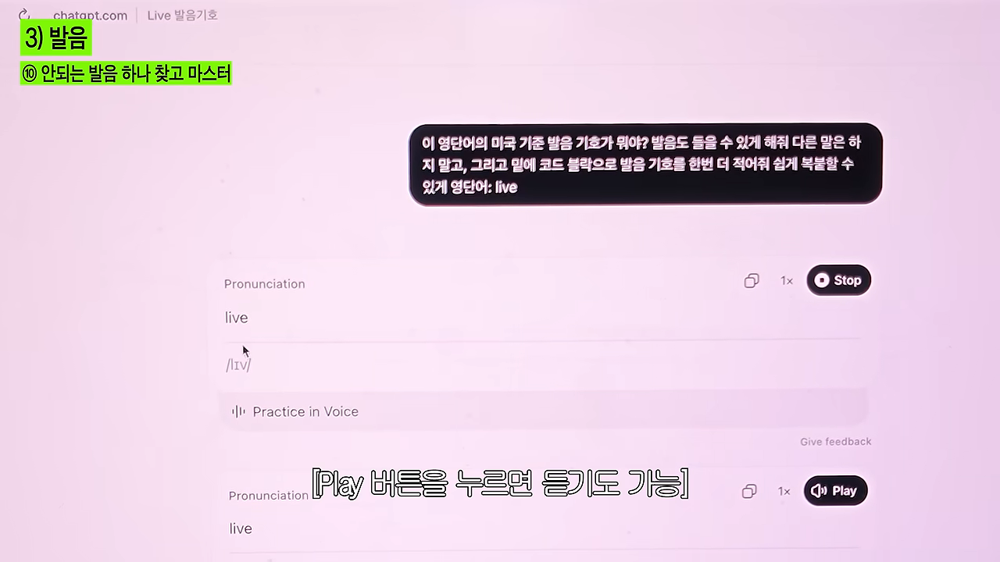
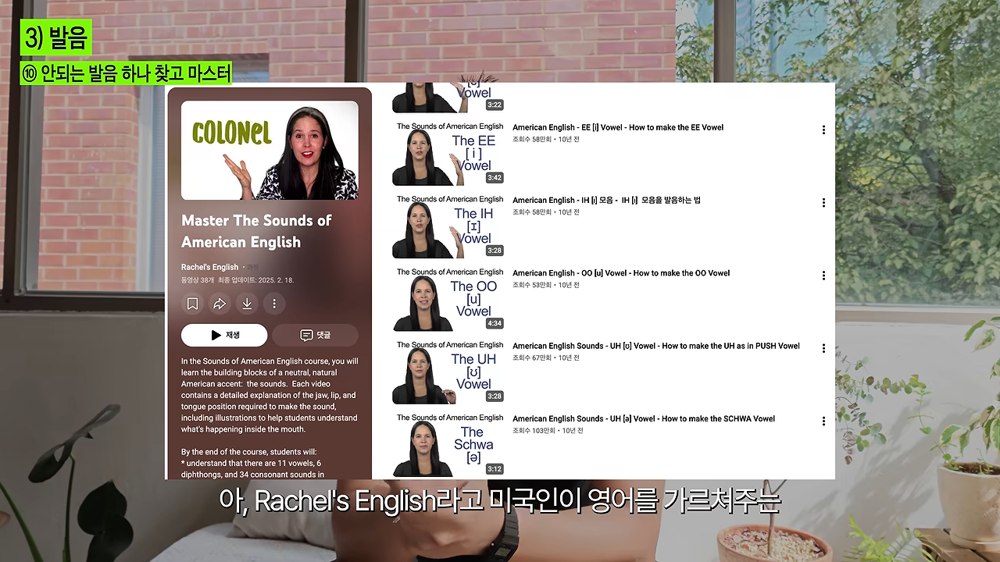
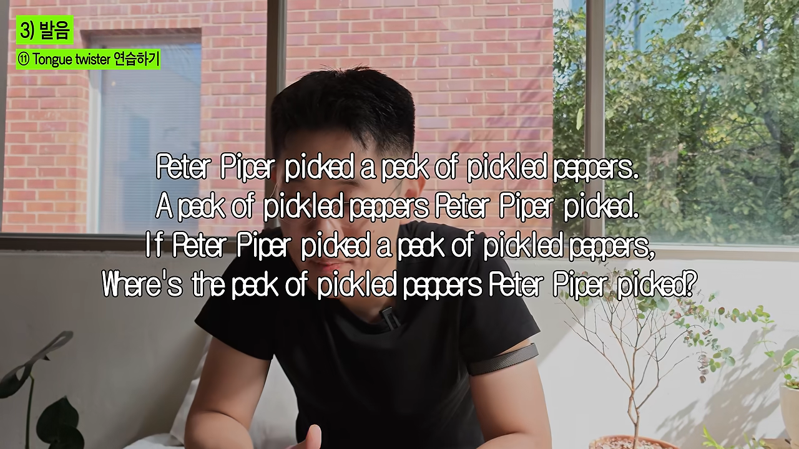
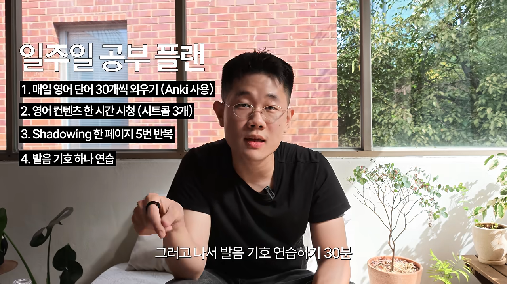

영어 실력은 단어, 인풋, 발음으로 갈려요
화자는 한국에서만 살았고 미국은 여행으로만 가 봤어요. 그런데 미국 친구들도, 한국 사람들도 그가 영어를 하면 교포인 줄 안대요. 이 영상은 그가 돈 들이지 않고 영어를 빨리 늘린 방법을 11개 팁으로 풀어 줘요.
화자는 영어의 기본을 단어, 인풋, 발음 세 가지로 나눠요. 화면 왼쪽 위에 뜨는 팁 번호도 이 세 갈래를 따라가요.
| 갈래 | 번호 | 팁 |
|---|---|---|
| 단어 | ① | 단어는 3,000개만 외우면 끝 |
| ②-1 | 2배 효율적으로 외우기 — spaced repetition | |
| ②-2 | 2배 효율적으로 외우기 — active recall | |
| ③ | 뉘앙스랑 문장까지 외우기 | |
| 인풋 | ④ | 많이 듣는 게 제일 중요 |
| ⑤ | 영어 콘텐츠 찾기 | |
| ⑥ | 2-2-2 기법 | |
| 발음 | ⑦ | 발음 = 자전거 타기 |
| ⑧ | shadowing은 필수 | |
| ⑨ | 발음 기호 부수기 | |
| ⑩ | 안 되는 발음 하나 찾고 마스터 | |
| ⑪ | Tongue twister 연습하기 |
단어는 3,000개면 충분하다고 해요
미국 드라마를 거의 다 알아들으려면 단어를 몇 개나 알아야 할까요? 화자는 연구 결과를 들어 3,000개면 시트콤의 95%를 이해할 수 있다고 말해요. 하루 30개씩이면 100일이면 끝나는 양이에요.
그런데 한국 학습자는 순서를 거꾸로 밟고 있어요. 토플이나 텝스를 준비하면서 실제 대화에서는 잘 안 쓰는 어려운 단어부터 외우거든요. 외국인이 '생각하다'도 모르는데 '상념에 잠기다'부터 외우는 셈이에요. 그러니 자주 쓰는 쉬운 단어 3,000개를 먼저 채우는 게 첫 번째 일이에요.
Anki로 단어를 두 배 빠르게 외우기
중학교 때처럼 단어장을 한 장씩 넘기며 손으로 쓰면서 외우는 방식은 효율이 낮아요. 화자는 그보다 두 배 넘게 효율적인 방법으로 두 가지 기법을 꼽아요.
잊을 때쯤 다시 보기 — spaced repetition
1800년대 심리학 연구에서 나온 망각 곡선이 출발점이에요. 처음 외운 내용은 시간이 지날수록 곡선을 따라 빠르게 사라져요. 화면의 수치로는 20분 뒤 58.2%, 하루 뒤 33.7%, 한 달 뒤 21.1%만 남아요. 시험 전날 벼락치기한 내용이 일주일 뒤 생각나지 않는 게 바로 이 곡선대로 잊은 거예요.

그런데 잊어 갈 때쯤 다시 복습하면 기억이 위로 올라가고, 그다음 곡선은 더 완만해져요. 이걸 몇 번 반복하면 장기 기억으로 넘어가요. 그래서 복습을 아무 때나 하지 않고, 적절한 시점에 맞춰 하는 게 중요해요.

스스로 물어보기 — active recall
두 번째는 단어장을 그냥 보지 않고 스스로 묻는 거예요. 영어 단어만 보고 '이게 무슨 뜻이더라?' 떠올린 다음 확인해요. 화자는 이렇게 외우면 시간이 지나도 두 배 이상 더 잘 기억한다는 연구가 있다고 말해요.
두 기법을 한 번에 — Anki
Anki는 두 기법을 자동으로 해 주는 앱이에요. 앞면에 영어 단어, 뒷면에 뜻이 있는 플래시 카드를 넘기면서 얼마나 잘 아는지 버튼으로 고르면 돼요.

완전히 모르겠다고 누르면 Anki가 바로 다시 보여 주고, 다음 날, 일주일 뒤처럼 망각 곡선에 맞춰 복습 시점을 알아서 정해 줘요. Mochi 같은 비슷한 앱도 같은 원리로 움직여요.

뜻 말고 쓰임새를 외워요
영어를 보고 한국어 뜻을 보는 식으로만 외우면 단어를 엉뚱하게 쓰게 돼요. 미국인이 '갈망하다'를 외우고 치킨이 먹고 싶을 때 '나 치킨 너무 갈망해'라고 말하는 것과 같아요. 뜻은 통해도 어색하죠.
그래서 카드 뒷면 맨 위에는 한국어 뜻을, 가운데에는 예문을 적고 문장째 외워요. 예문을 봐도 어떻게 쓰는지 감이 안 오면 ChatGPT에 그 단어의 뉘앙스를 물어보면 돼요. 부정적으로 들릴 수 있다든지 하는 쓰임새를 알려 줘요. 이렇게 하루 30개씩 외우는 게 화자가 말하는 첫 번째 숙제예요.
좋아하는 시리즈를 2-2-2로 돌려 보기
아기에게 엄마가 '이건 주어고 여기엔 타동사가 와' 하고 가르치지 않잖아요. 그냥 계속 말을 걸면 아기가 알아서 받아들여요. 화자는 1996년 Science 논문을 들며, 말을 많이 들으면 어디가 단어인지 스스로 찾아내고 언어가 습득된다고 설명해요.
다만 전혀 모르는 말을 계속 듣기만 해서는 안 돼요. 어느 정도 이해할 수 있는 영어를 많이 듣는 게 핵심이에요.
나를 붙잡는 콘텐츠부터 찾아요
화자에게는 빅뱅 이론이 그런 콘텐츠였어요. 너무 재미있어서 여덟 번씩 돌려 봤고, 시즌 3은 열두 번까지 봤대요. The Office, Friends, Modern Family 같은 시트콤도 후보로 들어요.
재미가 중요한 이유도 연구로 설명해요. 영국과 사우디에서 영어를 배우는 340명을 조사했더니, 성적을 가장 잘 예측한 건 영어를 얼마나 재미있게 배우는가였다고 해요. 좋아하는 한국 예능은 몇 번이고 다시 보듯, 그렇게 볼 만한 영어 콘텐츠를 찾으라는 말이에요.
2-2-2 기법으로 돌려 봐요
한 에피소드를 여섯 번 연달아 보면 지루하니까, 시리즈 전체를 단위로 돌려요.
| 회차 | 자막 | 이때 하는 일 |
|---|---|---|
| 1~2번째 | 한글 자막 | 줄거리와 상황을 먼저 파악해요 |
| 3~4번째 | 영어 자막 | 누가 어떤 상황에서 무슨 말을 했는지 영어로 잡아요 |
| 5~6번째 | 자막 없음 | 여기서부터 진짜 듣기 학습이 일어나요 |
같은 시리즈를 반복하면 좋은 점이 또 있어요. 한 시리즈 안에서는 비슷한 단어가 계속 나와요. 그래서 여섯 번 보는 동안 같은 표현을 수십, 수백 번 듣게 돼요. 귀만 트이는 게 아니라 문장 구조가 머리에 박혀서 말할 때 저절로 튀어나와요.
발음은 자전거 타기처럼 근육으로 배워요
Nobody hears your grammar but everybody hears your accent.
문법은 아무도 못 듣지만, 억양은 모두가 들어요.
— 영상 08:14
화자는 발음을 근육 쓰는 법을 배우는 일로 봐요. 그래서 자전거 타기와 비슷해요. 어른이 돼서도 자전거를 배울 수 있듯, 혀를 어떻게 움직이고 성대를 어떻게 올리고 내리는지 이해하면 누구나 발음을 고칠 수 있어요.
섀도잉으로 리듬을 익혀요
언어마다 고유한 리듬과 음정이 있어요. 알아듣지 못해도 일본어인지 중국어인지 구분되는 이유예요. 이 리듬을 익히는 가장 효율적인 방법이 섀도잉이에요. 화자가 소개한 연구에서는 학습자에게 하루 10분씩 8주 동안 섀도잉을 시켰더니, 원어민 평가자들이 알아듣기 쉬운 정도와 유창성이 크게 좋아졌다고 평가했대요.
먼저 좋아하는 시리즈의 대본을 구글에서 검색해 내려받아요. 예를 들어 '빅뱅이론 시즌 3 1화 스크립트'처럼 찾으면 돼요.
그다음 영상을 틀어 놓고 등장인물이 말하자마자 따라 말해요. 아무리 어색해도 최대한 비슷하게 따라 하는 게 핵심이에요.

대본에는 I'm going to go to school로 적혀 있어도, 실제 배우는 연음 때문에 소리를 뭉개서 말해요. 이때 적힌 대로가 아니라 들리는 대로 따라 해야 해요. 다 이해해야 한다는 강박도 버리고, 들리면 그냥 따라 말하면 돼요. 하루 목표는 A4 한 페이지를 다섯 번 반복하는 거예요.
발음 기호 44개를 부숴요
화자는 의외로 이 얘기를 하는 사람이 없다고 말해요. 영어 발음 기호는 44개뿐이에요. 기호마다 혀와 입을 어떻게 움직이는지만 알면, 어떤 단어든 어떻게 발음해야 하는지 알 수 있어요. 시작은 이렇게 해요.
- 섀도잉한 대본에서 하루 한 문단만 소리 내 읽고, 제일 이상하게 나오는 발음에 형광펜을 칠해요.
- 그 단어를 ChatGPT에 넣고 미국식 발음 기호와 실제 소리를 받아요.
- YouTube의 Rachel's English에서 그 발음 기호를 검색해 영상을 보고 따라 해요.
- 다시 ChatGPT에 그 발음 기호가 들어간 단어 15개를 추천받아 하루 종일 반복해 읽어요.

ChatGPT에는 화자가 띄운 프롬프트를 그대로 넣으면 돼요. 발음 기호와 함께 Play 버튼으로 소리도 들을 수 있어요.
이 영단어의 미국 기준 발음 기호가 뭐야? 발음도 들을 수 있게 해줘 다른 말은 하지 말고, 그리고 밑에 코드 블럭으로 발음 기호를 한번 더 적어줘 쉽게 복붙할 수 있게 영단어: <영어단어>
— 영상 10:58 화면

Rachel's English는 미국인이 미국식 발음을 아주 쉽게 가르쳐 주는 채널이에요. 발음 기호별로 혀와 입 모양을 하나씩 풀어 둔 영상이 3~5분 길이로 있고, 한글 자막도 달려 있어요.

텅 트위스터로 입을 풀어요
발음이 자전거 타기라면 반복 연습이 필요해요. 화자가 꼽는 연습법은 텅 트위스터와 랩이에요. 텅 트위스터는 '경찰청 철창살' 같은 잰말놀이의 영어판이에요. 텅 트위스터를 모아 둔 웹사이트에서 하루나 이틀에 하나씩 골라 완벽해질 때까지 연습해요.

하루 1시간 남짓 일주일 공부 계획
마지막으로 화자는 모든 팁을 하루 일과로 묶어요. 핵심은 따로 시간을 내지 않아도 되는 일은 자투리 시간에 하고, 퇴근 후에는 발음만 집중하는 거예요.
| 할 일 | 분량 | 언제 |
|---|---|---|
| Anki로 새 단어 외우기 | 매일 30개, 복습을 더하면 수백 개 | 출퇴근길, 줄 서서 기다릴 때 |
| 영어 콘텐츠 보기 | 20분짜리 3개 이상 | 출퇴근길에 쇼츠 대신 |
| 섀도잉 | 30분 이내 | 퇴근 후 |
| 발음 기호 연습 | 30분 | 퇴근 후 |
| 텅 트위스터 | 하루 하나 | 옆에 적어 두고 틈날 때마다 |

출퇴근길에 쇼츠만 봐도 한 시간이 지나가요. 그 시간에 보고 싶은 미국 시트콤을 대신 본다고 생각하면 돼요. 결국 따로 내야 하는 시간은 퇴근 후 1시간에서 1시간 반 정도예요. 화자는 이대로 6개월에서 1년만 따라 하면 자기와 비슷한 실력을 가질 수 있다고 말해요.